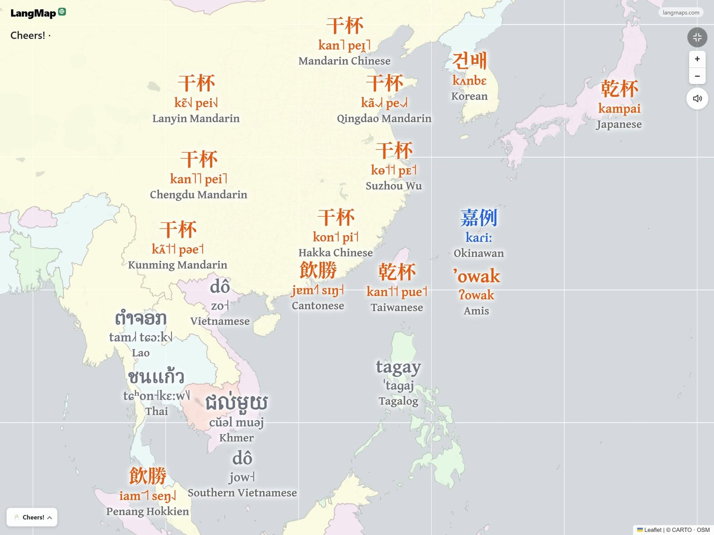

How to Turn Bad Luck into Good Luck, Just by Changing a Word
- In Japan, a squid that sounded like losing money became a winning squid.
- In Cantonese, a vegetable that suggested defeat was renamed "Victory Melon."
- In Thailand, a flower escaped sorrow, and a bankrupt dessert turned into gold.

Contents
Japan: The squid that learned to win
In Japan, dried squid is traditionally called するめ (surume).
But it has another name:
当たりめ (atarime).
Why?
Because suru (摩る) can mean losing money, especially in gambling.
So people replaced it with atari (当たり), a winning hit.
The squid stayed exactly the same. Only its luck changed.
And the Japanese didn't stop there.
梨 (nashi), pear, sounds like nashi (無し), "nothing."
So it became 有りの実 (ari no mi), the fruit of "having."
葦 (ashi), reed, sounds like ashi (悪し), "bad."
So it became よし (yoshi), "good."
A small change of sound.
A completely different fortune.
Cantonese: Even vegetables must win
In Cantonese-speaking southern China, the loofah vegetable is called:
絲瓜 (si1 gwaa1).
But in some local pronunciations, its name suggests 輸, "to lose."
So it acquired a more fortunate name:
勝瓜 (sing3 gwaa1).
"Victory Melon."
And pig's tongue?
The ordinary Chinese name 豬舌 contains a character associated by sound with 蝕, financial loss.
So Cantonese speakers commonly call it:
豬脷 (zyu1 lei6).
The second character evokes 利, profit.
Even a pig's tongue should bring money, not lose it.
And this love of lucky words extends beyond the dinner table.
From Cantonese to Singapore: Drinking to victory
Raise a glass in Hong Kong, and you may hear:
飲勝 (jam2 sing3)!
"Cheers!"
Literally, "Drink to Victory!"
One explanation traces the expression to avoiding 乾, "dry" or "exhausted," in older drinking expressions such as 飲乾.
Why avoid dryness?
Because in traditional Cantonese commercial thinking, water can symbolize wealth.
An empty, dry cup might suggest an empty purse.
Better to drink to victory than to dryness!
The expression also flourished in Singapore and Malaysia.
At Singaporean wedding banquets, guests often stretch the words into a magnificent:
Yuuuuum Seng!
A traditional Cantonese toast has become a spectacular celebration, sometimes shared well beyond the Chinese community.
Thailand: From sorrow to beauty
In Thailand, even a beautiful flower once suffered from an unfortunate name.
The plumeria was traditionally called:
ลั่นทม (lanthom).
But its sound reminded people of ระทม (rathom), sorrow and suffering.
Many avoided planting it near their homes.
Then another name gained popularity:
ลีลาวดี (lilawadi).
A name suggesting elegance and grace.
Today, plumeria is a familiar sight in Thai gardens and resorts.
The flower didn't change. But its reputation blossomed.
And Thailand has an even more amusing example.
A traditional pancake-like sweet is called:
ถังแตก (thang taek).
Literally, "Bankrupt!"
Not exactly a promising name for a dessert business.
So some sellers adopted:
ถังทอง (thang thong).
"Golden Bucket."
In 2025, the Thai brand Tawad attracted attention for selling a premium version under this fortunate name.
The old name remains widely used.
But now customers can choose between bankruptcy and gold.
Same dessert. Very different financial prospects.
Vietnam: Let suffering pass
In southern Vietnam, a familiar Lunar New Year dish is bitter melon soup.
Bitter melon is called:
khổ qua (苦瓜).
But Vietnamese speakers can hear another meaning:
khổ: suffering, hardship
qua: to pass
So eating khổ qua at Tết, the Vietnamese New Year, carries a hopeful message:
"May all hardship pass."
Unlike the other examples, the vegetable wasn't renamed.
Its existing name simply gained a fortunate second meaning.
Sometimes, changing your luck doesn't even require changing a word.
Can words change fate?
A losing squid becomes a winning squid.
A vegetable refuses defeat.
A wedding toast celebrates victory.
A sorrowful flower becomes elegant.
A bankrupt dessert turns into gold.
And a bitter vegetable promises that hardship will pass.
Across different languages and cultures, people have found remarkably creative ways to escape unlucky words.
Not by changing the world around them.
But by changing how they speak about it.
Perhaps a name cannot change your fate.
But if you can choose between bankruptcy and gold, why not choose gold?